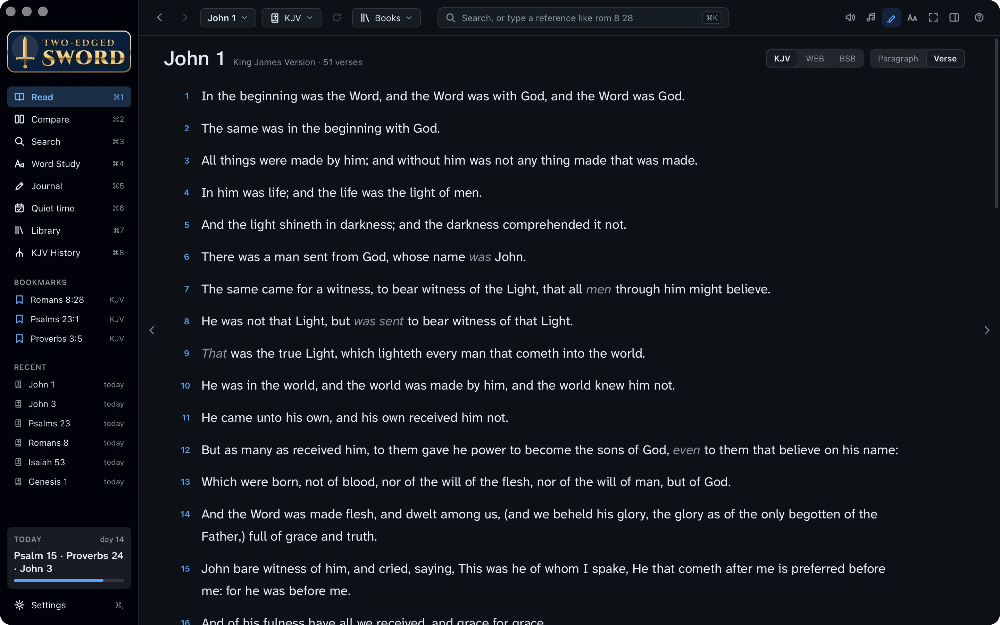
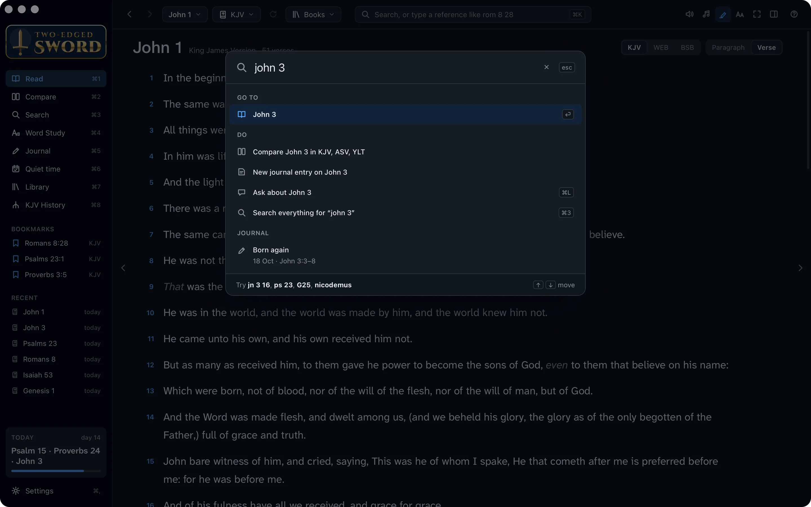
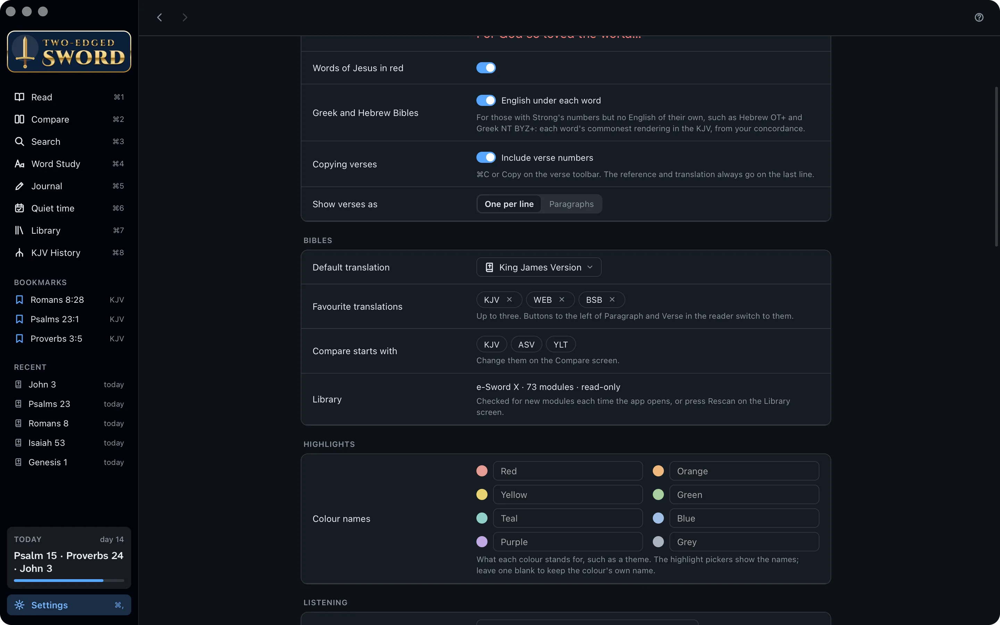
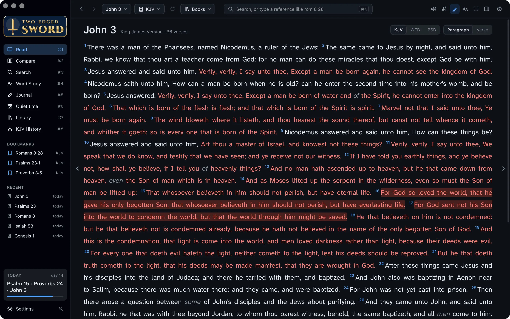
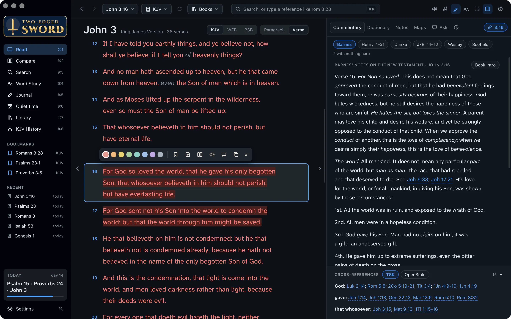
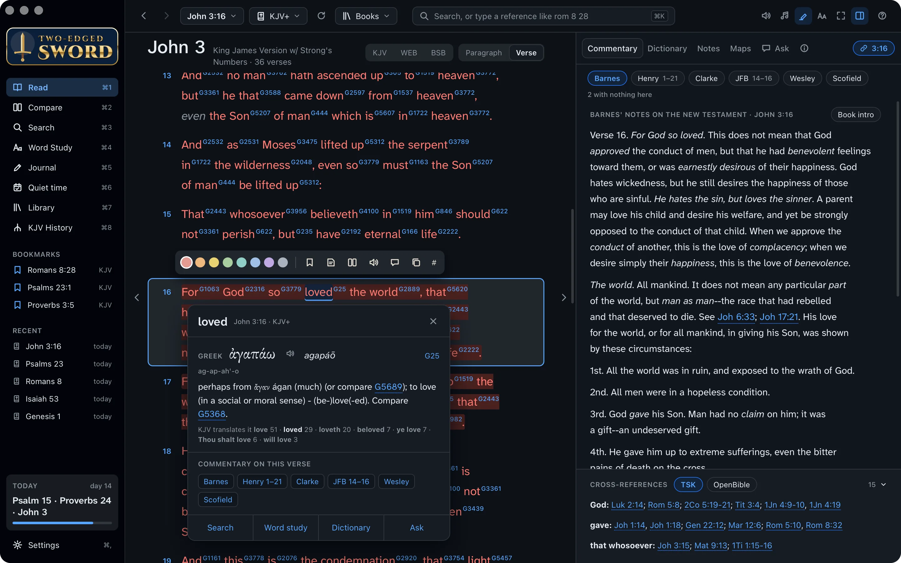
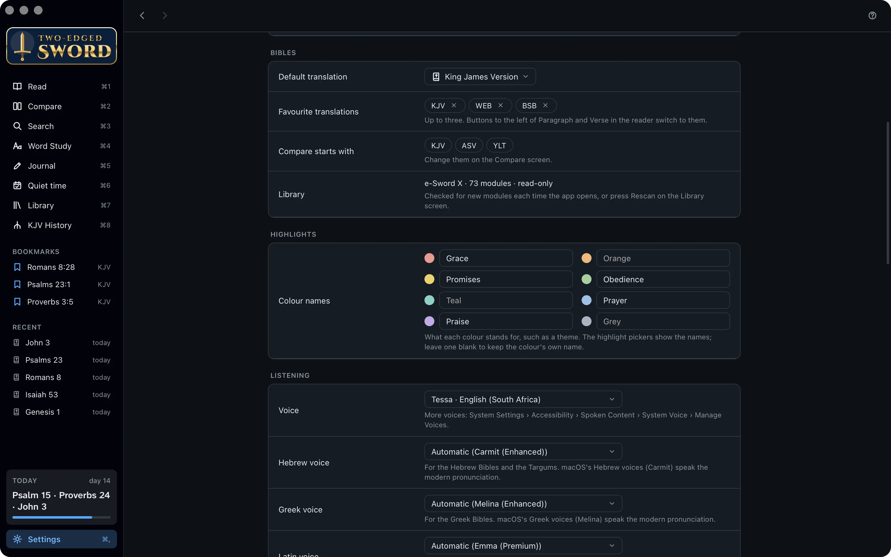
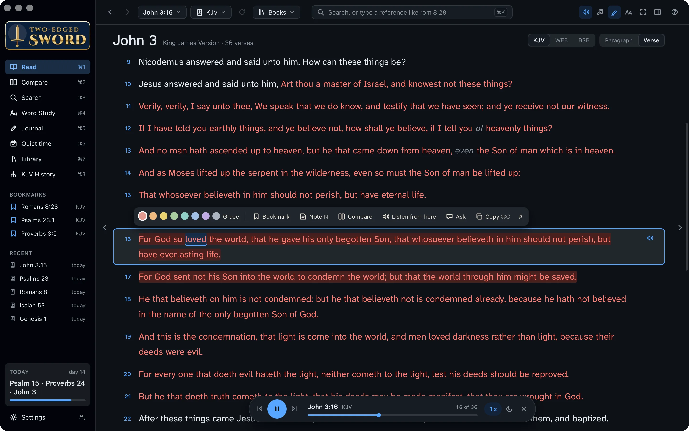
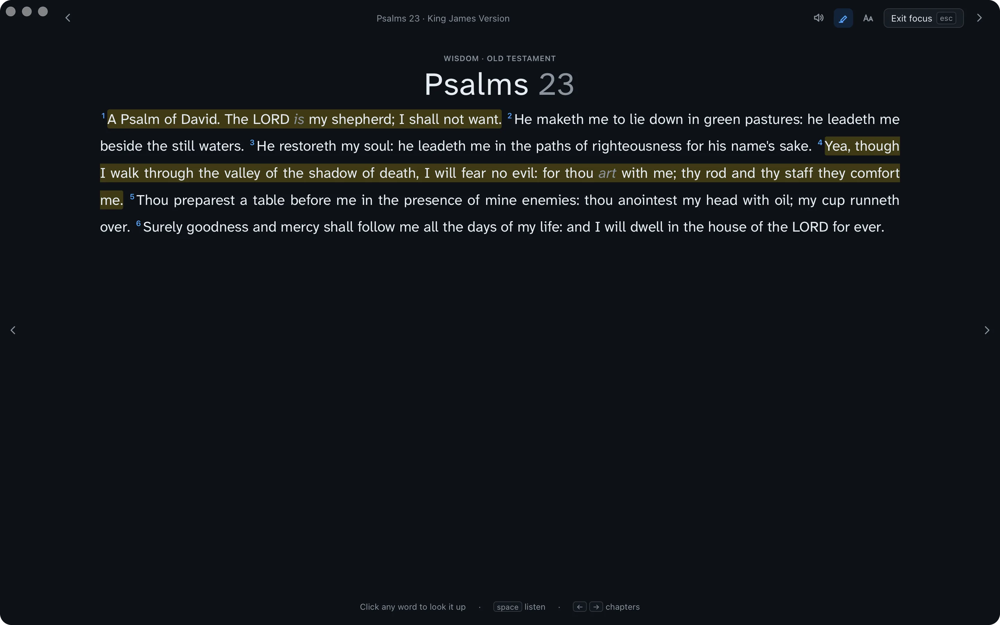

Tutorials › Reading
Your first week
with the Bible.
Read John's Gospel from the start, and learn the app as you go. No experience needed.
These are written, that ye might believe that Jesus is the Christ, the Son of God; and that believing ye might have life through his name.John 20:31
I'm using a
The steps and keys below follow your choice.
The story
You've just joined the Thursday group at Hillside Church, and you've decided to read John's Gospel this week, a chapter or two a day, so you can come to know Jesus better.
John wrote it so that we might believe that Jesus is the Christ, the Son of God, and have life through His name. Two-edged Sword puts everything written about each verse beside the text, so you can take your time with it. Before you start, ask the Holy Spirit to teach you: Jesus promised that the Comforter would teach us all things (John 14:26).
- John 1 to 3read, at your own pace
- The commentariesbeside the verse
- The Greekbehind a word
- Highlightsand bookmarks of your own
Install the app.
Two-edged Sword is free, needs no account and runs on your own computer. It comes with the King James Version and some twenty more Bibles, commentaries from Matthew Henry to Keil & Delitzsch, dictionaries and maps, so there's nothing else to find before you start.
- Download Two-edged Sword for Mac. You need a Mac with Apple silicon and macOS 13 or later.
- Open the disk image and drag Two-edged Sword onto Applications.
- Open it from Applications. macOS says it can't check the app for malware, because it isn't registered (notarised) with Apple. Click Done.
- Open System Settings › Privacy & Security, scroll down and click Open Anyway. It opens normally after that.
- macOS asks once for a few things as you use them, such as your Documents folder for the journal. Allow them as they come.
- Download Two-edged Sword for Windows. You need Windows 10 or 11 (64-bit).
- Run the installer. It installs for you alone, with no administrator password.
- If Windows says it protected your PC, click More info, then Run anyway. (The app isn't code-signed.)
- Open Two-edged Sword from the Start menu.

A guided tour. Each time it opens, the app offers its Getting started walk-throughs until you tick Don't ask me again. Press ? on any screen for help with it.
Find your way around.
Everything is a click or a key away. The sidebar on the left has the app's eight screens, with your bookmarks and recent chapters under them.
- Press ⌘1 to ⌘8 to switch screens: Read, Compare, Search, Word Study, Journal, Quiet time, Library and KJV History.
- To go anywhere, press ⌘K and type where. A reference works the way you'd say it:
john 3
- Press ↩ to open it. The same box finds a word, a Strong's number such as G26, or a command.
- ⌘[ and ⌘] take you back and forward, as in a web browser.

Choose your Bible.
The app opens in the King James Version. If you'd rather read another translation, make it your default, and keep a few favourites one click away.
- Press ⌘, to open Settings, and find Bibles.
- Choose the Bible the app opens with. Then choose up to three favourites: the World English Bible and the Berean Standard Bible are both modern and free.
- Back in Read, your favourites are buttons at the top of the chapter. Click one to change translation.

Just for now? The Bible menu at the top changes the translation until you next open the app. Then your default comes back.
Read John 3.
Nicodemus comes to Jesus by night, and hears that he must be born again. Make the page comfortable, and read the chapter through before you study any of it.
- Press ⌘K, type john 3 and press ↩.
- The Paragraph and Verse switch at the top of the chapter changes the layout. Paragraph reads like a printed Bible; Verse puts each verse on its own line.
- Too small? Press ⌘+ (or click Aa at the top right). ⌘− makes it smaller.
- Press → for the next chapter and ← for the one before.

Light or dark, and the font. Settings › Appearance sets the theme, the reading font and the words of Jesus in red.
Study a verse.
John 3:16 is the gospel in one sentence. Select it, and the study pane beside the chapter shows what the commentators have written on it, and where else Scripture says the same.
For God so loved the world, that he gave his only begotten Son, that whosoever believeth in him should not perish, but have everlasting life.John 3:16
- Click verse 16 (beside the words, not on one). It's outlined, and a small toolbar appears above it.
- The study pane on the right opens on Commentary. Click a name, such as Henry or Barnes, to read what he wrote on the verse.
- Under the commentary are the verse's cross-references, from the Treasury of Scripture Knowledge. Point at one to read it; click it to go there.
- No pane? Press ⌘\ to show it, or to hide it again.

The other tabs. Dictionary looks a word up in all your dictionaries at once, Notes has your own notes on the verse, and Maps has maps for the book you're in.
See the Greek.
The New Testament was written in Greek, and English has one word, “love”, where Greek has several. You don't need to know the language to see which one John used.
- Click the Bible menu at the top and choose KJV+: the King James Version with a Strong's number after each word.
- Click the word loved in verse 16. A box shows the Greek word behind it, ἀγαπάω (agapaō), its Strong's number, and how the KJV translates it elsewhere.
- Click the speaker in the box to hear the word said aloud.
- Click Word study in the box for everything about the word, with every verse that uses it.

Not only in the Bible. Click a word in a commentary, a dictionary or a book to look it up in the same way.
Mark what matters.
As you read, some verses will stay with you. Mark them, and they'll be easy to find again.
Highlight
- Select a verse and click one of the eight colours on its toolbar.
- Give each colour a meaning in Settings › Highlights: yellow for God's promises, red for grace, blue for prayer. The colour pickers then show the name, and the journal offers it as a tag.
- The highlighter button at the top right hides all your highlights, and shows them again.

Bookmark and note
- The bookmark button on the same toolbar keeps the verse in the sidebar, under Bookmarks.
- Press N (or click the note button) to write a note on the verse. It's kept in your journal, and the verse gets a mark in the margin.
Listen.
Faith cometh by hearing, and hearing by the word of God (Romans 10:17). On a walk or a drive, let the app read the chapter to you.
- Click the speaker at the top right, or press ⌘P. Each word lights up as it's spoken, and reading carries on into the next chapter.
- To start at a verse, select it and click the listen button on its toolbar.
- The player at the foot of the page sets the speed and a sleep timer. Space pauses, and F7 and F9 go to the chapter before or after.

Better voices. In System Settings › Accessibility › Spoken Content › System voice › Manage Voices, download a voice marked (Premium), such as Zoe or Jamie, then choose it in the player's voice menu.
Better voices. In Windows Settings › Time & language › Speech, click Add voices and add the ones you like, such as Hazel or George. Restart the app, then choose one in Settings › Listening.
Read in focus mode.
“Be still, and know that I am God” (Psalm 46:10). Some days you want nothing on screen but the words.
- Open a passage, such as Psalm 23.
- Press ⌘.. The text fills the window, and the pointer hides when you're not moving it.
- Press Esc to come back.

The screen stays on. While you're reading in Read or Compare, or listening, your screen doesn't go to sleep or lock.
Well done.
You've read John 1 to 3 with the commentators beside you, and seen the love of God in the Greek of John 3:16. Along the way, you learned to:
- Install the app and find your way around
- Go anywhere with ⌘K
- Choose your Bible and favourites
- Read the commentaries on a verse
- See the Greek behind a word
- Highlight, bookmark and note verses
- Listen to a chapter
- Read in focus mode